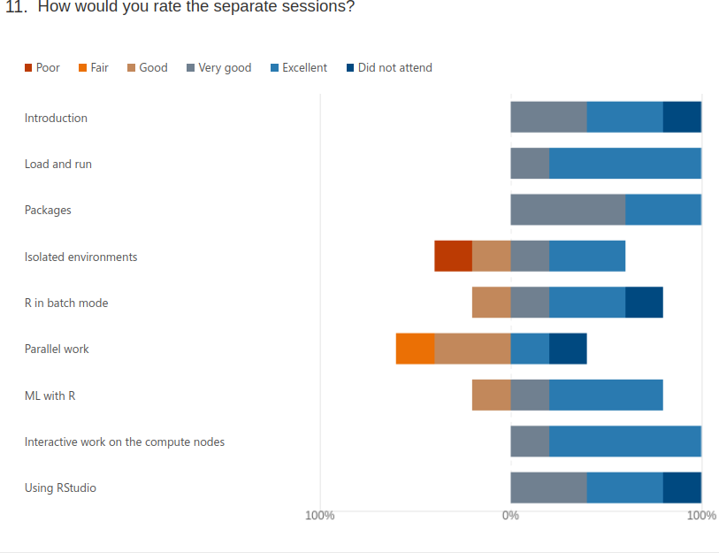
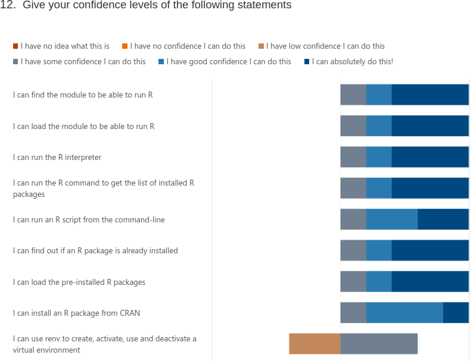
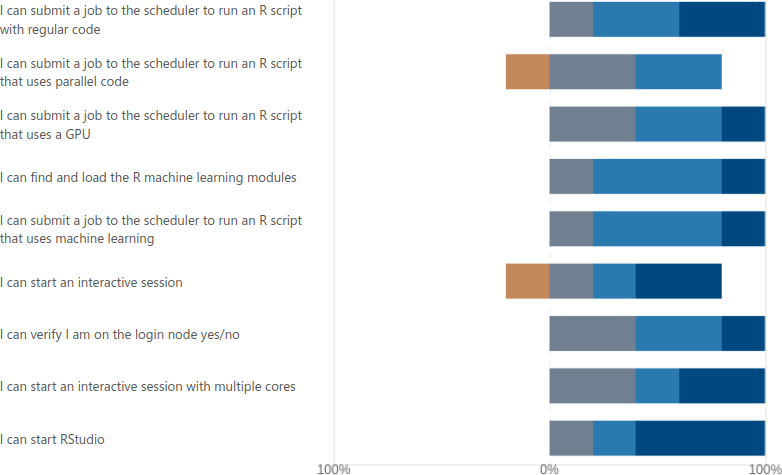

Evaluation 2024-10-24: R¶
- Reflections: Richel
5 responses
1. Overall, how would you rate today's training event?
- 7.4. Average Number
2. Today's content and feedback to the lecturers (e.g. materials, exercises, structure): – What did you like best?
- "I liked being able to run through the examples myself. "
- "Pedro's sessions"
3. Today's content and feedback to the lecturers (e.g. materials, exercises, structure): – Where should we improve?
- "I think sometimes there could have been slightly less kinds of examples, and one main example per module with extra focus and more time to complete. "
4. Training event organisation (e.g. announcement, registration, ...): – What did you like best? – Where should we improve?
- "I liked the general organization, felt like any questions one might have where answered in the introductory email."
5. Length of teaching today was
Adequate 4
Too short 0
Too long 1
6. Depth of content was
Adequate 4
Too superficial 1
Too profound 0
7. The pace of teaching was
Adequate 3
Too slow 0
Too fast 2
8. Teaching aids used (e.g. slides) were well prepared
Agree completely 2
Agree 3
No strong feelings 0
Disagree 0
Disagree completely 0
9. Hands-on exercises and demonstrations were
Adequate 3
Too few 2
Too many 0
10. Hands-on exercises and demonstrations were well prepared
Agree completely 2
Agree 3
No strong feelings 0
Disagree 0
Disagree completely 0
11. How would you rate the separate sessions?



13.Did today’s course meet your expectation? Yes 3 No 0 Not sure 2
-
Which future training topics would you like to be provided by the training host(s)?
-
2 responses
-
Do you have any additional comments?
-
1 response